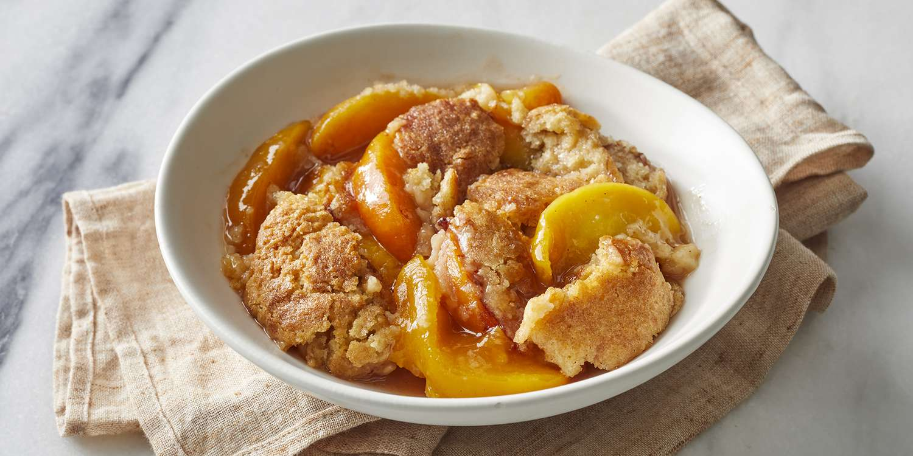

Peach Cobbler
Description
Peach cobbler is a classic American dessert that typically consists of baked peaches topped with a sweet biscuit-like crust. It's a popular dessert in the southern United States, especially during the summer months when peaches are in season.
Peach cobbler is typically served warm, either on its own or with a scoop of vanilla ice cream or a dollop of whipped cream. It has a comforting, homey taste and texture, with the sweetness of the peaches complemented by the slightly crunchy and buttery crust. It's a delightful dessert that showcases the natural flavors of fresh peaches and is enjoyed by many as a comforting and delicious treat.
The below recipe is actually from my mom's own handwritten recipe.
Step 1
- 10 ripe peaches
- 1 cup sugar
- 1 cup corn starch
- 1 tsp grated lemon peel
- 1 tbsp lemon juice
- 1 tsp vanilla extract
In a large bowl, mix the above together several times. Let stand for 30 minutes.
Step 2
- 1/2 cup of butter
Preheat over to 350 degrees Fahrenheit. Place butter in a 9x13 inch pan and melt in oven while it is preheating.
Step 3
- 2 cups all purpose flour
- 1 1/4 tsp baking powder
- 1/2 tsp ground nutmeg
- 2/3 cup butter
- 2/3 cup heavy cream
Combine all the above 1st 4 ingredients. Combine butter into the mixture using your hands until mixture is a crumble-like texture. Add cream and stir just until dough holds together.
Step 4
- 1/2 cup butter
- 1 cup all purpose flour
- 1 cup white sugar
- 1 tsp baking powder
- 1 cup milk
Mix above ingredients together. Stir in milk.
Step 5
Remove pan of melted butter from over. Pour mixture from Step 4 into pan but do not stir. Spread mixture from Step 1 onto batter. Drain mixture from Step 1 of excess syrup before spreading on the batter. Crumble mixture from Step 3 evenly over fruit.
Bake at 350 degrees Fahrenheit for 60 minutes.